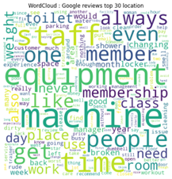
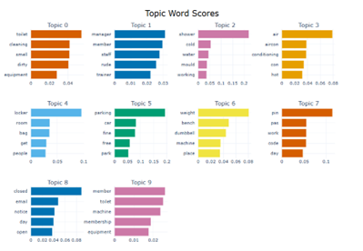

Insights from Google and Trustpilot Reviews
This project applied advanced Natural Language Processing (NLP) techniques to analyze over 39,000 customer reviews from Google and Trustpilot for one of UK's largest no-frills health clubs, headquartered in Leeds. The goal was to uncover recurring pain points, emotional triggers, and actionable insights to help the business improve customer satisfaction and retention.
Tools & Technologies
Problem Statement:
The gym chain faced a surge in negative reviews across platforms, impacting brand perception and loyalty. The challenge was to:
- Identify dominant themes in negative feedback
- Detect emotional tone and urgency
- Develop targeted strategies to enhance customer satisfaction
- Improve retention rates
Methodology:
1. Data Preparation:
- Merged and cleaned reviews from Google (23,250) and Trustpilot (16,673)
- Removed stopwords, lemmatized text, and filtered out brand-specific terms
- Applied fuzzy matching to unify location names across datasets
2. Exploratory Analysis:
- Word frequency and WordClouds revealed recurring terms like “equipment,” “staff,” and “cleanliness”
- Negative reviews lacked positive qualifiers, highlighting dissatisfaction
3. Topic Modeling:
- BERTopic: Identified clusters around air conditioning, hygiene, overcrowding, and staff behavior
- Gensim LDA: Reinforced themes around equipment and facility cleanliness
- LLM (Phi 3.5 mini instruct): Generated granular topics and synthesized 10 actionable insights
4. Emotion Analysis:
- Used Hugging Face’s BERT-based emotion classifier
- Found anger as the dominant emotion in 2,303 reviews
- Re-ran BERTopic on anger-filtered reviews to prioritize urgent issue
5. Spatial Analysis:
- Used FuzzyWuzzy for location matching
- Found 12% higher overlap between Google and Trustpilot locations
- Identified locations requiring improvement and enhanced customer statisfaction
Skills Demonstrated:
- NLP pipeline design (NLTK, BERTopic, Gensim, Hugging Face)
- Emotion classification and topic prioritization
- LLM-based insight generation (Phi 3.5/4 mini instruct)
- Data storytelling and stakeholder-focused reporting
- Runtime optimization and GPU resource management

